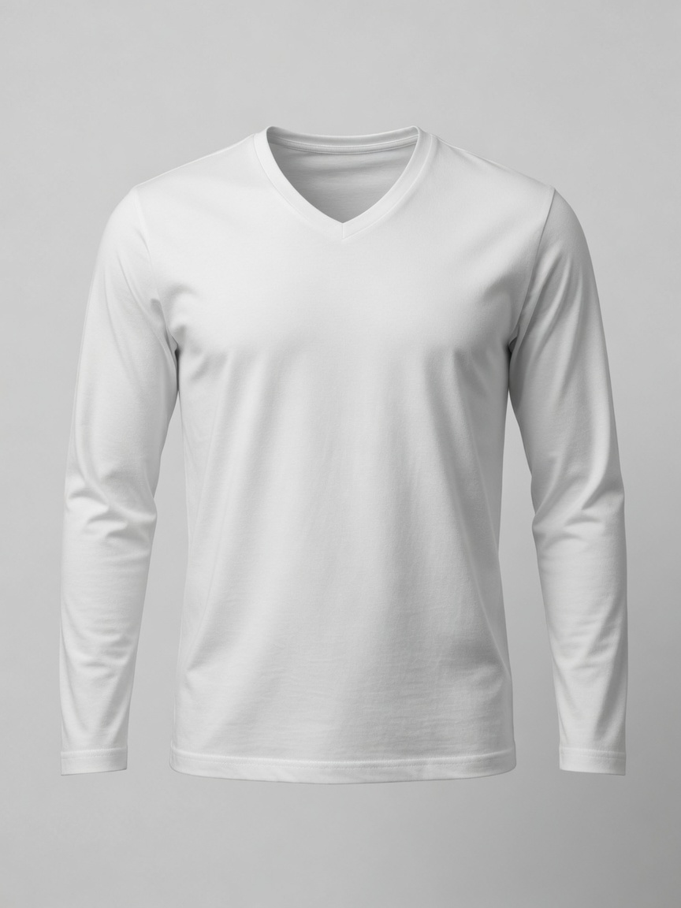
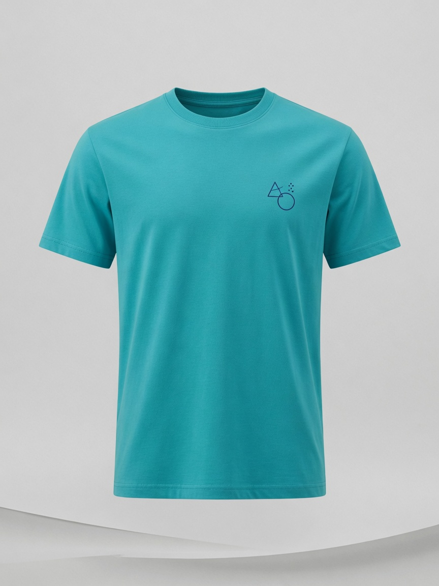
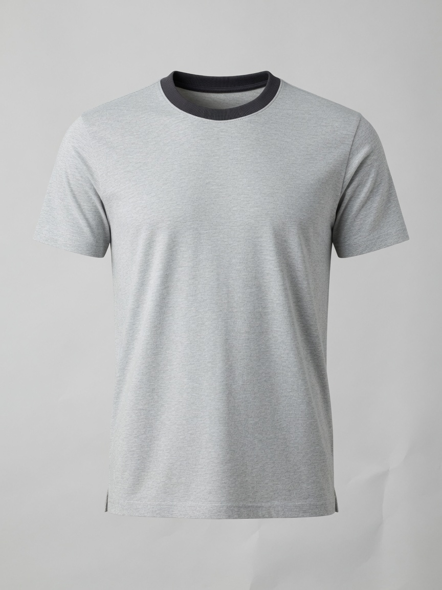
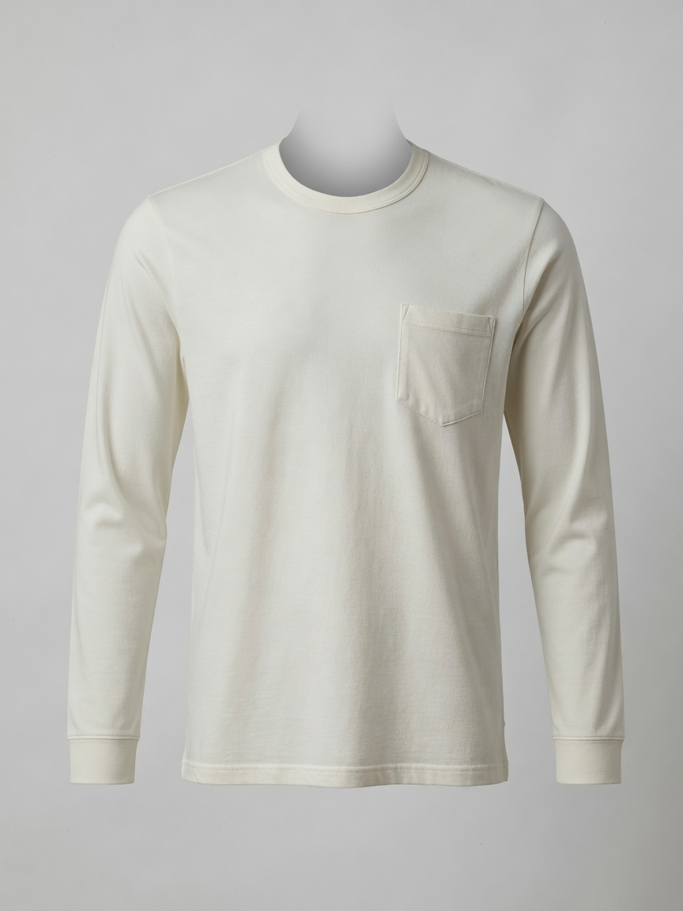
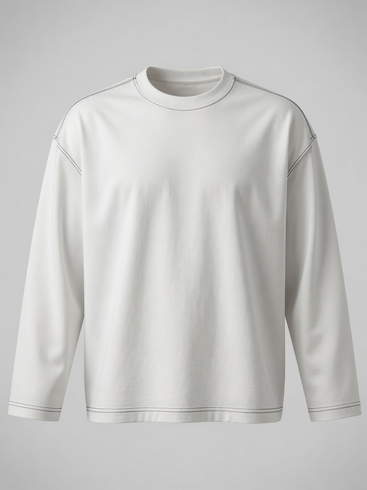
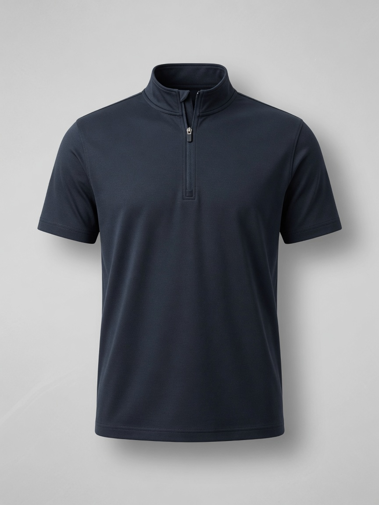
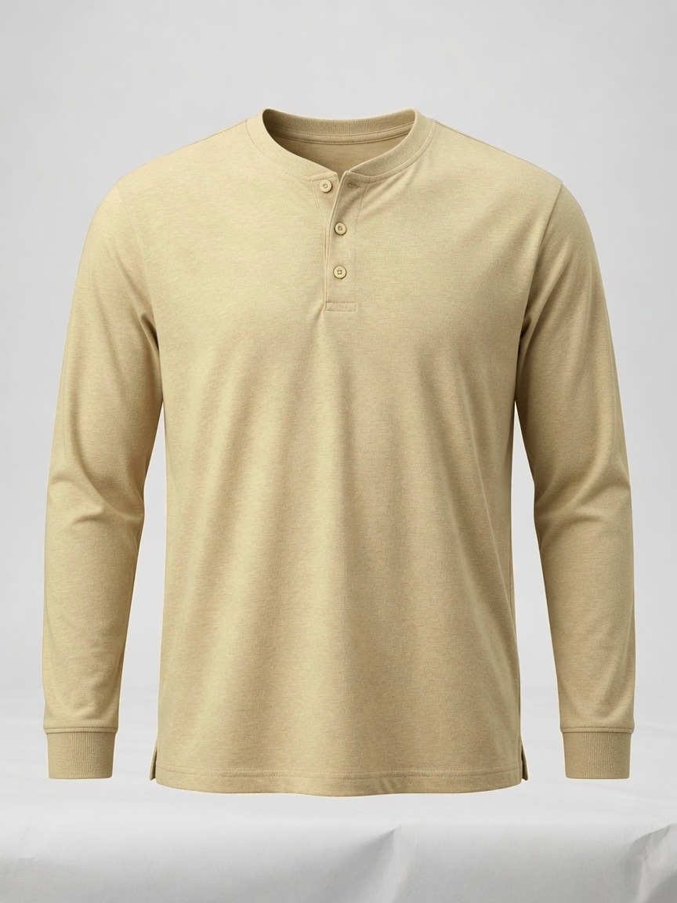
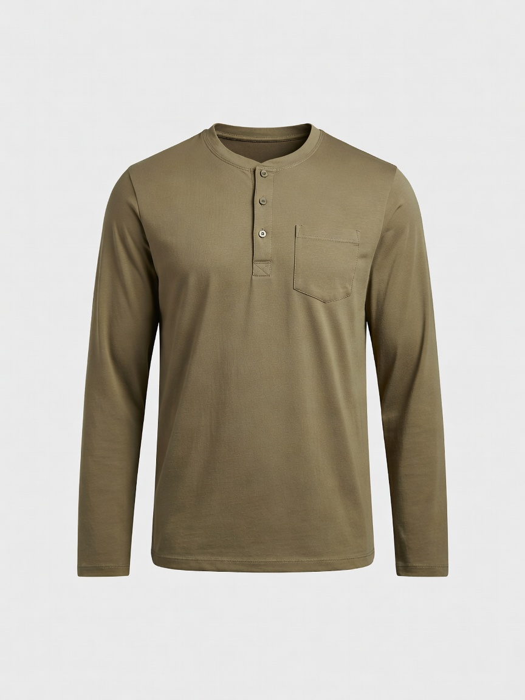

Men's Tee Scout · 2026
户外男标T恤
开款指引
日常简约基础、亨利领结构、健身速干弹力，是三条生活场景，不是三种克重。白底成衣 + L 码实测，再去 Amazon / SHEIN / Temu 对热销。
一 · 场景与定位
日常 T：简约基础（净色 / 领型 / 小标 / 口袋）。运动 T：速干与弹力。按生活场景开款，不要和面料模块混谈。
二 · 面料与材质
提质溢价核心：重磅/匹马棉打手感，华夫格/竹节棉/棉麻打风格，凉感/防污/莫代尔打卖点。
三 · 工艺与洗水
酸洗做旧、炒雪花破洞、扎染渐变。美式复古 / 高街废土 / 度假风，适合高溢价潮流单品。
四 · 设计与装饰
色块拼接 / 假两件加层次，贴布绣 / 小面积刺绣提品质。节日印花只做爆发点，不主攻图形 Tee。
2026 热卖锚点（检索当日）： Amazon 男 T 榜前排是 Gildan / Hanes / Comfort Colors / Pro Club 重磅基础盘，#9 已出现 oversized vintage washed / acid wash； 运动榜是 UA / 速干排汗；GQ 重磅首选 Buck Mason Field-Spec（310gsm，$62），平价锚 Uniqlo U / Kirkland 205gsm； SHEIN / Temu 前排是华夫格、重磅纯棉、酸洗宽版；独立站 Buck Mason 把 Field-Spec / Slub / Pima 做成三条面料轨。
点卡片看平台实时热销。上架走右侧 免审路径：运动 T / 休闲 T / 亨利衫，不要走男士时尚主路径。
江安澜 常规T恤类目 免审路径对照
| 标签 | 用在哪些款 | 类目路径 |
|---|---|---|
| 运动T | 速干、排汗、压缩、健身训练 | 运动与户外用品 > 健身、训练用品 > 健身服 > 男士 > 男士休闲运动衫、T恤 > 男士休闲运动T恤 |
| 休闲T | 日常净色、V领、小标、拼色领、口袋、明线、半拉链、重磅、华夫格、竹节棉、棉麻、莫代尔、酸洗、扎染、拼接、刺绣 | 运动与户外用品 > 运动户外服饰 > 男士运动户外服饰 > 男士运动休闲衬衫和 Polo 衫 > T 恤 |
| 亨利衫1 | 长袖亨利领、棉麻亨利、户外休闲亨利 | 运动与户外用品 > 户外休闲 > 徒步和户外休闲服装 > 男士户外服饰 > 男士户外衬衫 > T 恤 |
| 亨利衫2 | 同上，备选一条 | 服装、鞋靴和珠宝饰品 > 体育专用服装 > 户外服饰 > 男士户外服饰 > 男士户外衬衫 > T 恤 |
一、场景与定位 · Scenario
按生活场景开款，不是按克重开款。三条轨： 日常 T · 简约基础（通勤、约会、周末出门）用领型、小标、口袋、明线拉开货盘； 亨利衫 · 领型结构（长袖亨利、棉麻亨利、户外休闲亨利）单独成盘，主图必须拍出 2–3 粒扣，走亨利衫免审路径； 健身运动 T · 速干 / 弹力（训练、跑步、健身房）卖排汗和贴身。重磅、华夫格放面料模块。
日常 T 恤 · 简约基础
净色打底，再用圆领 / V 领 / 拼色领换领；胸口小图标、真口袋、明线、半拉链做细节。版型走常规或宽松。材质可牛奶丝 / 仿棉拉架 / 丝棉混纺。亨利领不要混在这盘，见下方亨利衫板块。

净色圆领
日常走量锚。白 / 黑 / 灰先开。领口螺纹、肩线正、不透。这是简约基础的底盘，别和重磅抢同一套主图。

净色 V 领
同一净色盘换领型。V 口不要开太深。主图必须拍出领口，否则后台会按圆领审。可与亨利领互为备选。

胸口小图标 / 小 Logo
左胸 3–5cm 几何或文字即可，不要大印花。蓝 / 红 / 白三色好出片。避开潮牌原标和 IP。

拼色领 / 领口细节
灰身深领、白身黑领最稳。主图特写领圈螺纹。比印花便宜，辨识度够。

胸口袋
真口袋比假袋耐看。袋口缉线要平。米白 / 灰比纯白好出层次。可与小标互斥，不要堆在同一件上。

明线 / 外线 · 宽松
肩线、袖口、下摆用深色明线。必须走宽松表，正肩会显得线歪。垫肩细节可另开一条，不要和这件混 SKU。

半拉链 / 小高领
日常简约的结构升级。拉链从胸口到领口，主图必须拉开一截。色走藏青 / 黑。不要做成厚卫衣领。
亨利衫 · 领型结构
亨利衫单独成盘，不要塞进日常圆领里混开。主图必须拍出 2–3 粒扣，否则后台按普通 T 审。先开基础长袖亨利，再测棉麻亨利和户外休闲亨利。上架走亨利衫1 / 亨利衫2，不要挂休闲 T。

基础长袖亨利领
亨利衫货盘的底款。主图必须拍出 2–3 粒扣，扣位、门襟、领圈要干净。秋冬做长袖。和 V 领不要同时当主图，选一条主推。

棉麻亨利
夏季度假词。Amazon 上 COOFANDY 棉麻亨利已经是长销。要接受自然皱，文案写成「亚麻质感」而不是「免烫」。主图同样要拍清 2–3 粒扣，不要拍成普通圆领棉麻 T。

户外休闲亨利
挂户外衬衫路径的结构款。色走橄榄 / 卡其 / 藏青，比纯白更像户外。详情页写徒步、露营、周末出门，不要写成健身房速干。
健身运动 T 恤 · 速干 / 弹力
训练、跑步、健身房。卖排汗、四向弹、贴身。不要和日常净色共用主图话术。尺码走中弹修身表。

速干 / 排汗
健身房和跑步的走量款。涤氨网眼或蜂巢针。主图写 Quick Dry / Moisture Wicking。宽松训练版另开，套宽松表。

弹力 / 修身训练
贴身压缩是另一条 SKU，不要和速干宽松混。详情页必须有身材示意。尺码按中弹修身表，胸围比常规小一档。
二、面料与材质 · Fabric & Texture
面料是提质和溢价的核心。 基础款打克重（重磅）与手感（匹马棉 / 液氨）； 风格款靠肌理（华夫格 / 坑条）、自然感（竹节棉 / 棉麻）； 功能款靠凉感 / 防污 / 抗菌 / 莫代尔垂感解决痛点。

高克重重磅 · 220–300g+
面料溢价轨，不是场景款。标题写清 240 / 260 / 280gsm。Pro Club、Hanes Beefy-T、Comfort Colors 是亚马逊验证款。

华夫格 / 坑条肌理
SHEIN、Temu 2026 夏季前排常见。不用印花也能看出「不是基础白 Tee」。主图特写格子，色系走驼 / 橄榄 / 黑。

竹节棉 / 雪花棉复古
独立站（Buck Mason Slub、Warehouse）验证过的手感溢价。详情页要有近景纱结，不要拍成普通素色。燕麦 / 卡其比纯白更耐看。

棉麻复古 T
夏季度假词。Amazon 上 COOFANDY 棉麻亨利已经是长销，秋冬切长袖。要接受自然皱，文案写成「亚麻质感」而不是「免烫」。

莫代尔垂感 / 凉感
功能环保轨：凉感、三防白 T、抗菌、有机棉可共用这一套「解决问题」的详情页。CDLP 用 Tencel + 匹马棉卖 $135，平价可走莫代尔混纺。
三、工艺与洗水 · Process & Wash
打造美式复古、高街废土或度假风的核心工艺，适合做高溢价潮流单品。 Amazon 男 T 榜已出现 oversized vintage washed / acid wash；B2B 端 300gsm+ 酸洗空白 Tee 是跟款热点。 这是洗水工艺，不是印花图案。

酸洗 / 做旧 / 炒雪花破洞
2026 街潮验证款。宽版 + 水洗比合身更出片。破洞要克制（下摆或袖口一点），过破会掉客单。Comfort Colors 成衣染是更「干净」的水洗替代。

扎染 / 渐变色
度假与音乐节场景。色走土褐 / 卡其 / 雾蓝，比彩虹扎染更像男标。每缸色差要在详情页写清楚，否则差评会集中在「和图片不一样」。
四、设计与装饰 · Design & Craft
本品类仍是普通男标 T 恤，不做大面积图形印花主航道。 拼接与假两件增加层次；小面积刺绣 / 贴布绣提升局部重工。万圣节等节日印花只作爆发点检索，不当常年 SKU。

色块拼接 / 假两件
不用印花也能拉开货盘。横拼最稳，假两件看缝位是否干净。SHEIN 男装拼接搜索量大，客单可略高于纯色。

贴布绣 / 小面积刺绣
左胸 3–5cm 最安全，避开大 Logo 与 IP。Etsy 定制刺绣客单高，平台店可做「小叶子 / 几何 / 文字」原创小标。重工贴布绣当利润款测。
长袖 T 恤 / Polo 成衣尺寸（开款用 · 单位 cm）
按桌面尺码表录入。日常简约基础走常规款；明线 / 重磅 / 酸洗走宽松款；速干弹力走中弹修身。 领围表内只给了 M=53，其余码按样衣量。夹围空着的不要自己编。最终以样衣 + 洗后尺寸为准。
常规款 · 日常净色 / V领 / 小标 / 拼色领 / 口袋 / 亨利领
| 部位 | XXS | XS | S | M | L | XL | XXL | XXXL |
|---|---|---|---|---|---|---|---|---|
| 肩宽 | 42.5 | 44 | 45.5 | 47 | 48.8 | 50.6 | 52.4 | 54.2 |
| 胸围 | 96 | 100 | 104 | 108 | 113 | 118 | 123 | 128 |
| 前衣长 | 66 | 68 | 70 | 72 | 74 | 76 | 78 | 80 |
| 袖长 | 60 | 60.5 | 61 | 61.5 | 62 | 62.5 | 63 | 63.5 |
| 领围 | — | — | — | 53 | 53 | — | — | — |
中弹修身 · 健身速干 / 弹力训练
| 部位 | XXS | XS | S | M | L | XL | XXL | XXXL |
|---|---|---|---|---|---|---|---|---|
| 肩宽 | 41.5 | 43 | 44.5 | 46 | 47.8 | 49.6 | 51.4 | 53.2 |
| 胸围 | 90 | 94 | 98 | 102 | 107 | 112 | 117 | 122 |
| 前衣长 | 64 | 66 | 68 | 70 | 72 | 74 | 76 | 78 |
| 袖长 | 58 | 58.5 | 59 | 60 | 60.5 | 61 | 61.5 | 62 |
| 领围 | — | — | — | 53 | 53 | — | — | — |
宽松款 · 明线 / 重磅 / 酸洗 / 棉麻
| 部位 | XXS | XS | S | M | L | XL | XXL | XXXL |
|---|---|---|---|---|---|---|---|---|
| 肩宽 | 47.5 | 49 | 50.5 | 52 | 53.8 | 55.6 | 57.4 | 59.2 |
| 胸围 | 100 | 104 | 108 | 112 | 117 | 122 | 127 | 132 |
| 前衣长 | 66 | 68 | 70 | 72 | 74 | 76 | 78 | 80 |
| 袖长 | 60 | 60.5 | 61 | 61.5 | 62 | 62.5 | 63 | 63.5 |
| 领围 | — | — | — | 53 | 53 | — | — | — |
Polo 参考 · V 领 / 半拉链可对照袖长
| 部位 | XXS | XS | S | M | L | XL | XXL | XXXL |
|---|---|---|---|---|---|---|---|---|
| 肩宽 | 42.5 | 44 | 45.5 | 47 | 48.8 | 50.6 | 52.4 | 54.2 |
| 胸围 | 96 | 100 | 104 | 108 | 113 | 118 | 123 | 128 |
| 前衣长 | 66 | 68 | 70 | 72 | 74 | 76 | 78 | 80 |
| 袖长 | 59 | 59.5 | 60 | 61 | 61.5 | 62 | 62.5 | 63 |
| 领围 | — | — | — | 53 | 53 | — | — | — |
美区 · 标码男装 T 恤
mens t-shirt / heavyweight tee / acid wash t-shirtSHEIN US · Men's Tee
男士 T 恤 Best Selling，先看哪类面料/版型在前排。
Amazon US · 人气
验证真实需求与差评点：缩水、透、领口变形、偏小。
Amazon · Best Sellers
官方畅销榜。当前是 Gildan / Hanes / Comfort Colors / Pro Club 基础盘。
Temu · 综合
低价带对照，避免盲目卷价。看华夫格、速干、基础色。
AliExpress · 销量
货源端销量，看工厂克重区间与起订。
SHEIN · 净色基础
日常简约走量色与价。
Amazon · V领
领型变化，看开口深度。
SHEIN · 胸口袋
口袋细节热销。
Amazon · 半拉链
日常结构升级。
SHEIN · 速干排汗
健身场景走量。
Amazon · 弹力训练
修身压缩细分。
Amazon · 亨利衫
扣位必须拍清，看 2–3 粒扣结构。
SHEIN · 亨利衫
长袖亨利 / 棉麻亨利热销对照。
SHEIN · 重磅纯棉
高克重搜索，看 220g+ 怎么写标题。
Amazon · 匹马棉
手感溢价验证。独立站对标 Buck Mason Pima。
SHEIN · 华夫格
肌理款主力入口。
Amazon · 竹节棉
复古纱结手感，看评价是否提「起球」。
Amazon · 棉麻
夏季自然感。亨利领占比高，圆领可切空白。
Temu · 华夫格
低价肌理对照。
Amazon · 凉感
功能卖点：凉感 / 冰丝 / 三防白 T。
Amazon · 有机棉
环保轨。证书和成分表要比图案重要。
SHEIN · Acid Wash
酸洗宽版，街潮主入口。
Amazon · Acid Wash
ADOREJOY 等 oversized washed 已进畅销榜。
Amazon · Vintage Wash
成衣染 / 做旧，比破洞更稳。
SHEIN · Tie Dye
扎染。优先看低饱和男标色。
Temu · 酸洗
低价洗水对照。
Amazon · Distressed
破洞 / 炒雪花，看破损尺度。
SHEIN · Color Block
色块拼接热销。
Amazon · 拼接
假两件 / 撞色层次。
Etsy · 刺绣热度
独立站刺绣定价与小标设计。
Amazon · Embroidery
平台刺绣人气与差评点。
SHEIN · Halloween
节日爆发点，只作季节检索。
Amazon · Halloween
8–10 月再开，不当常年货盘。
Buck Mason Tees
GQ 2026 重磅首选。Field-Spec / Slub / Pima 三条轨。
Uniqlo Men Tees
U 系列宽版 + Supima + AIRism，平价面料对照。
Everlane Tees
Premium Weight 基础盘，看克重话术。
ASOS Men Tee
年轻潮流版型与色系。
Pinterest · 重磅穿搭
廓形与叠穿灵感。
BoohooMAN
街头男装，酸洗 / 宽版参考。
欧区 / UK · 标码男装 T 恤
mens t-shirt / heavyweight t-shirt / washed teeSHEIN UK · Tee
英站男士 T 恤 Best Selling。
SHEIN EUR · Tee
欧区站对照 UK 前排差异。
Amazon UK · 人气
英站人气与评价。
Amazon DE · Herren T-Shirt
德站本地词人气。
ASOS · T-Shirt
欧区年轻标杆，版型必扫。
AliExpress · 销量
货源销量排序。
SHEIN UK · Heavyweight
英站重磅。
SHEIN UK · Waffle
华夫格肌理。
SHEIN UK · Acid Wash
酸洗英站热销。
Amazon UK · Oversized
宽版人气。
Boohoo · Tee
英国平价时尚，进入后选 Best sellers。
Next UK
本土零售，进入后选 Most popular。
M&S T-Shirt
高质量对照，非低价赛道。
Etsy UK · Embroidery
英区刺绣礼品向。